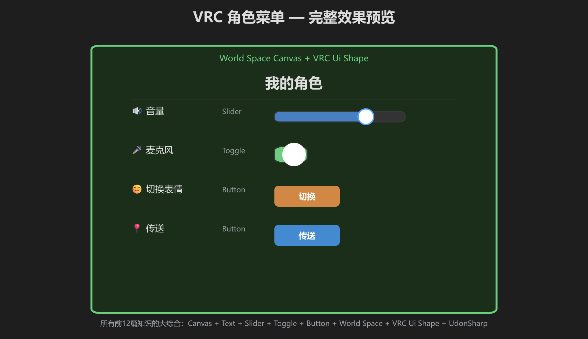
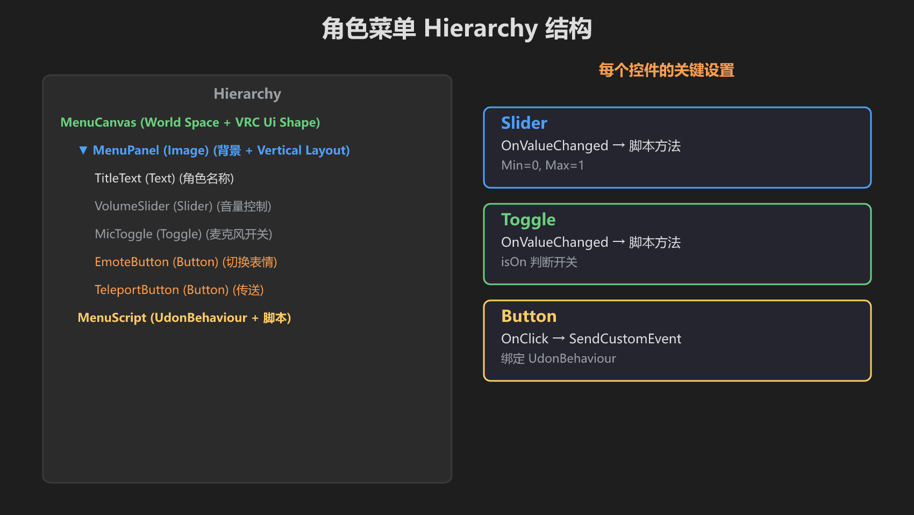
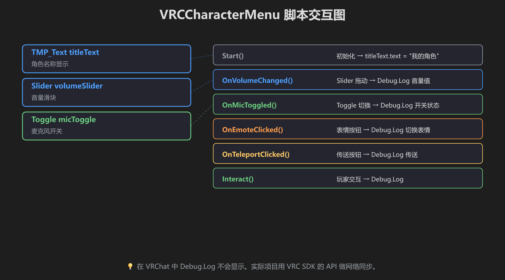
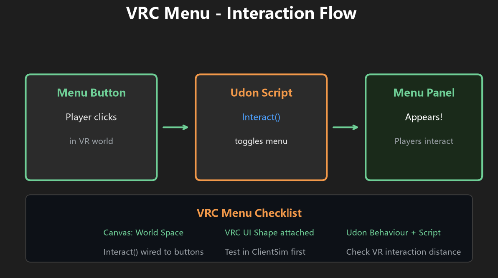
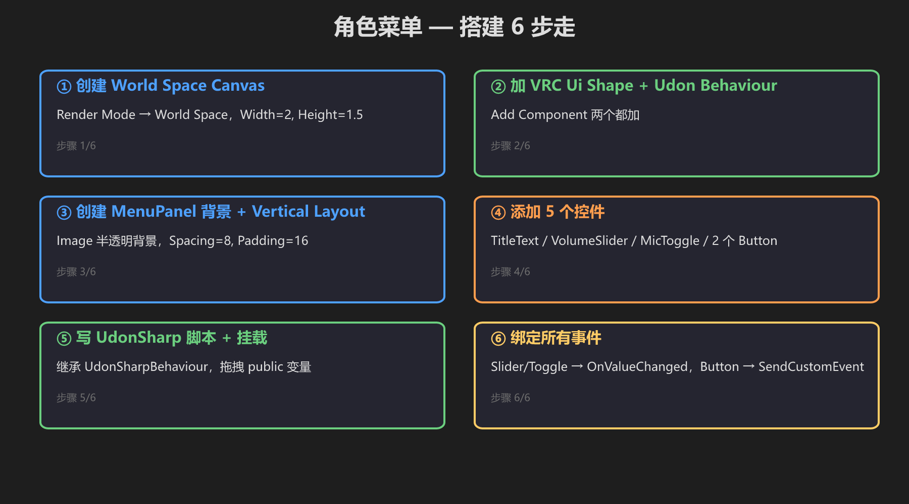
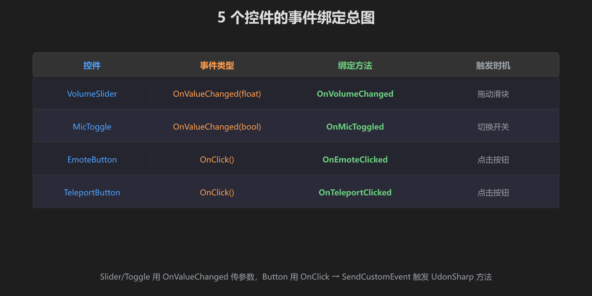

第 12 篇：VRC 实战 — 角色菜单面板
前 11 篇所有知识的大综合：做一个完整的 VRChat 角色菜单。
🎯 最终效果

角色名 + 音量 Slider + 麦克风 Toggle + 表情/传送 Button
🌳 Hierarchy 结构

MenuCanvas (World Space) → MenuPanel (Vertical Layout) → 5 个控件
📜 脚本交互

public 字段拖拽赋值 + 每个控件对应一个事件方法

玩家点击 → VRC Ui Shape → Button → SendCustomEvent → UdonSharp 逻辑
🔨 搭建 6 步走

从 Canvas 到事件绑定，6 步完成整个菜单
🔗 事件绑定总图

Slider/Toggle 用 OnValueChanged，Button 用 OnClick → SendCustomEvent
using UdonSharp;
using UnityEngine;
using TMPro;
public class VRCCharacterMenu : UdonSharpBehaviour
{
public TMP_Text titleText;
public UnityEngine.UI.Slider volumeSlider;
public UnityEngine.UI.Toggle micToggle;
void Start() { titleText.text = "我的角色"; }
// 下面这些方法由 UI 的 OnValueChanged / OnClick → SendCustomEvent 调用
public void OnVolumeChanged() { Debug.Log("音量: " + volumeSlider.value); }
public void OnMicToggled() { Debug.Log("麦克风: " + (micToggle.isOn ? "开" : "关")); }
public void OnEmoteClicked() { Debug.Log("切换表情"); }
public void OnTeleportClicked() { Debug.Log("传送!"); }
}不要把 VRC_Pickup 的Interact()当成 UI 点击事件。这里 UI 按钮用的是 Button.OnClick →SendCustomEvent("OnEmoteClicked")这种模式。方法必须 public 且不带参数。
- [ ] Canvas 是 World Space，有 VRC Ui Shape
- [ ] 所有控件正常显示
- [ ] Slider 可拖拽、Toggle 可切换
- [ ] 按钮点击有响应